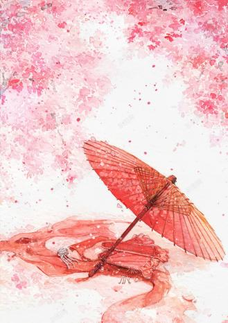
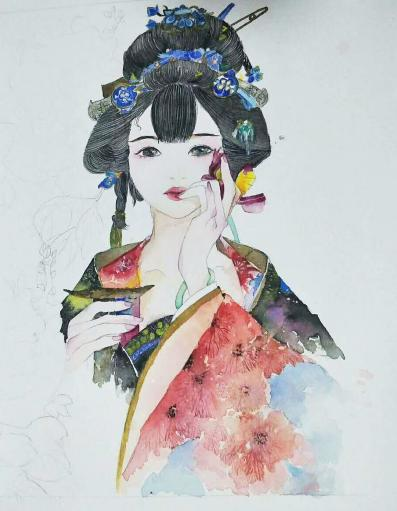
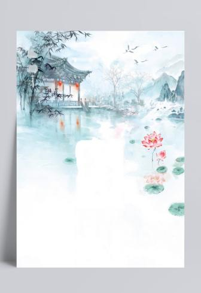

水彩是一个外来画种,从1715年传教士郎世宁来华教授西画算起,水彩画传入中国至今正好是三百年。在这三百年间,从"水彩"到"中国水彩",经过了曲折而复杂的历史进程,确立了中国水彩的文化质性和语言特征,特别是近百年来的中国水彩艺术最具鲜明的时代特点和清晰的历史脉络,并对近现代中国美术产生了重要影响。但是由于种种原因,学界对于水彩艺术的研究和梳理并不充分,目前有关中国水彩艺术历史的研究专著屈指可数,相关的展览和学术活动也未形成系统性和有效的影响力。
第一阶段为“古代水彩画”。这个时期可以上溯到古埃及、印度、希腊、波斯和中国。我国战国时期的帛画，可以称得上是“古代水彩画”。无论从设色以及画面的风格都体现出了水彩画语言的独特魅力。波斯王朝的细蜜画，也是倍受人观注的“古代水彩画”的形式，更有一种独特的感受。
第一阶段为“古代水彩画”。这个时期可以上溯到古埃及、印度、希腊、波斯和中国。我国战国时期的帛画，可以称得上是“古代水彩画”。无论从设色以及画面的风格都体现出了水彩画语言的独特魅力。波斯王朝的细蜜画，也是倍受人观注的“古代水彩画”的形式，更有一种独特的感受。
第二阶段为“近代水彩画”。这个时期的水彩画，是我们现在所熟悉的狭义规定的水彩画。是指用水和水彩颜料调和在特制加工的水彩纸上所画的图画。它经过画家的实践总结,形成了一套完整的与其他画种截然不同的技法，同时随着科学的发展，光色的运用以及素描光影等造型因素的结合，使画面充分发挥了水的作用,，形成独特的审美趣味。这些因素有机结合，形成了现代水彩画的独特风貌。 符合上述这个概念的水彩画，其历史并不太长，首先起源于17世纪的德国，18世纪的英国工业革命带来了近代水彩画的繁荣，19世纪末才由西方传入中国。
第三阶段为“当代水彩画”。当今世界水彩画融入了更多时尚的因素，由于新材料新工具的运用，再加上世界文化的融合交流，使水彩画更加丰富，更加五彩缤纷。各个国家都有了各自的发展拓宽，既有本民族的又有异域文化的结合。无论从内容形式还是技法风格上都有了新的突破,可谓百花齐放。 水彩画的特点：画面明亮、轻快、颜色纯净、用色透明、用笔肯定。不必要的“复改”都会使画面减损水彩画的光辉。水彩画的水与色的完美结合，更能突显出绝妙的艺术境界，为画者所倾倒、崇拜而狂热追求。
首先，水彩画一般都是小品性的。一是题材小；二是画幅小。因此也有人认为这是水彩画的短处，不利于表现宏大的画面，但正是因为水彩画它本身的独特语言，画幅小，便于携带，制作方便，适合收藏。同时，画幅小，题材小不等于作品的容量小，不等于作品的艺术性、审美性不高。著名的物理学家李政道说：“物理的研究是从最小单位开始的。”艺术表现的魅力正是于小见大，窥一斑而见全貌。只要画家的构思、心境能映射万象，那么就可以在一山一石、一花一草中发现无限，大画家是指作品的形式、深度等高人一筹。而不以画幅尺寸大小来衡定。可见水彩画有其独道之处，发挥自身的语言，只有不断在内涵上丰富和外延，更能体现自身独特风貌。
目前，中国水彩画的发展倍受世人瞩目。从1986年全国第六届美展，水彩画作为一个独立画种在广州展出，已从过去的一个小画种，一跃成为一个受人瞩目的大画种。中国水彩画的整体水平已达到世界一流，从西方的吸收、学习，由生到熟，发展到现在既能表现丰富的人民生活，又能反映轰轰烈烈的历史变革、主旋律的作品。水彩画在人、性、意上都得到了充分发挥。从过去单一的情趣，到目前具有丰富的表现力，扩大了水彩画的创作空间，拓展了视野，中国是水的天地、墨的故乡、彩的沃土，有水彩画创作队伍，如果以自己的方式吸收传统，并以自己的方式去探索求新，进一步拓展创新意识，以中国诗境为灵魂，以山川自然为对象，以色彩为依据，以传统笔墨为参照，发挥小巧精灵之特长，紧随时代步伐，传神达意，创造一个浓郁清新的水色世界。相信在时代发展的过程中，我们会以自己的感受创作出符合我们民族、我们心境的佳作，也为世界水彩艺术添砖加瓦。